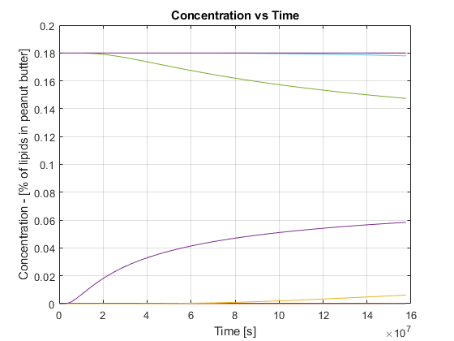
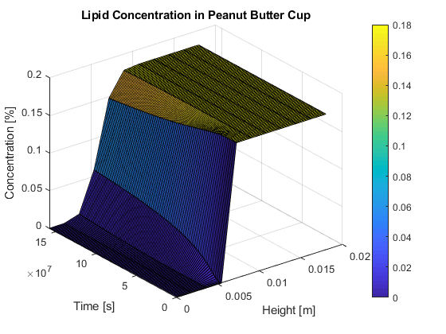
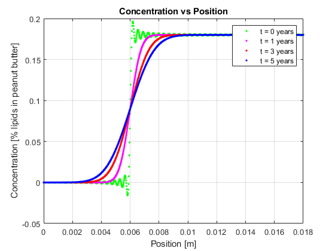

Biological and Agricultural Engineering Department
Modeling and Analysis of Physical and Biological Processes: EBS 270 Homework No. 2 - Due Date: May 10, 2019 Student: Guilherme De Moura Araujo
Contents
close all; clear all; clc;
Problem 1 a - Simplified analytical solution
Assumptions: 1) Peanut butter cup has a cylindrical geometry; 2) Diffusivity is the same in both chocolat and peanut butter layers; 3) There's no migration of lipidis by capilarity; 4) The peanut butter cup is homogenous and isotropic; 5) No vapor pressure escapes to the outside; 6) Concentrations are the same in the interface; 7) Concentration does not change in the radial direction; 8) There's no chemical reaction between peanut buttter and the chocolat.
h = 0.018; % height [m] hPb = 0.012; % peanut butter layer thickness [m] hC = h-hPb; % chocolate layer thickness [m] d = 5.5*10^-15; % diffusivity of the lipid in liquid [m2/s] co = 0.18; % initial concentration [%] dz = h/10; % [m] tMax = (365*24*3600*5); % maximum time (5 years) [s] dt = tMax/100; % time step [s] tgrid = 0:dt:tMax; zgrid = 0:dz:h; [z,t] = meshgrid(zgrid , tgrid); Sum = 0; infSum = 1E4; for n = 1:infSum Sin = sin(n * pi * hC/h); Cos = cos(n * pi * z/h); wn = n * pi/h; E = exp( -(wn^2) * d * t); Sum = Sum + (Sin * Cos .* E)/n; end C = co * (hPb/h - 2*Sum/pi); % Simplified analytical solution plot(t, C) xlabel('Time [s]'); ylabel('Concentration - [% of lipids in peanut butter]'); grid; title ('Concentration vs Time')
Problem 1b - Surface to produce plot of concentration vs. height and time
figure() surf(z, t, C) % surface plot colorbar title ('Lipid Concentration in Peanut Butter Cup') xlabel ('Height [m]'); ylabel ('Time [s]'); zlabel ('Concentration [%]');
Problem 1c - Different times
dz = h/1000; % [m] zgrid = 0:dz:h; [z,t] = meshgrid(zgrid , tgrid); infSum = 1E2; t0 = 0; t1 = 365 * 24 * 3600; t3 = 3 * 365 * 24 * 3600; t5 = 5 * 365 * 24 * 3600; Sum0 = 0; Sum1 = 0; Sum3 = 0; Sum5 = 0; for n = 1:infSum Sin = sin(n * pi * hC/h); Cos = cos(n * pi * z/h); wn = n * pi/h; E = exp( -(wn^2) * d * t0); Sum0 = Sum0 + (Sin * Cos .* E)/n; end C0 = co * (hPb/h - 2*Sum0/pi); for n = 1:infSum Sin = sin(n * pi * hC/h); Cos = cos(n * pi * z/h); wn = n * pi/h; E = exp( -(wn^2) * d * t1); Sum1 = Sum1 + (Sin * Cos .* E)/n; end C1 = co * (hPb/h - 2*Sum1/pi); for n = 1:infSum Sin = sin(n * pi * hC/h); Cos = cos(n * pi * z/h); wn = n * pi/h; E = exp( -(wn^2) * d * t3); Sum3 = Sum3 + (Sin * Cos .* E)/n; end C3 = co * (hPb/h - 2*Sum3/pi); for n = 1:infSum Sin = sin(n * pi * hC/h); Cos = cos(n * pi * z/h); wn = n * pi/h; E = exp( -(wn^2) * d * t5); Sum5 = Sum5 + (Sin * Cos .* E)/n; end C5 = co * (hPb/h - 2*Sum5/pi); % Plots x = z(1,:); figure(); plot(x(1,:), C0(1,:),'g.', x, C1(1,:), 'm.', x, C3(1,:), 'r.', x, C5(1,:), 'b.') xlabel('Position [m]'); ylabel('Concentration [% lipids in peanut butter]'); legend('t = 0 years', 't = 1 years', 't = 3 years', 't = 5 years') grid; title ('Concentration vs Position')
Problem 1d - Interpretation of results
Lipid concentration migrates from the peanut butter to the chocolate layer over time. We can notice that for smaller heights (chocolate layer) the concentration is higher for higher times. In addition, there's a descontinuity in the edge between the two layers for t = 0, which suggests that there's no lipid migration for t = 0 (Which is true! Lipids don't start to migrate right after the candy is made). Moreover, we can see that there's practically no differences in the concentrations (at any time) for h < 3 mm or h > 9 mm.
Problem 1e - Limitations of the model
Two potential concerns of the model are regarded to the geometry chosen to represent this problem. A peanut butter cup is not actually a cylinder, and the assumption of isotropy is only given considereing the cylindrical geometry of the peanut butter cup. We can overcome these limitations by approaching the problem in a more realistic way, using numerical solutions instead of simplified analytical solutions. This allow us to model the perfect shape of the peanut butter cup, and therefore isotropy is also taken care by the numerical approach. Another concern is the assumption that diffusivity is the same for both layers, which is not necessarily true. We can overcome this issue by creating extra boundary conditions and setting up different coefficiens according to the layer we're analyzing. Something like: D = Dchoc, 0<h<0.006; D = Dpb, h>0.006.